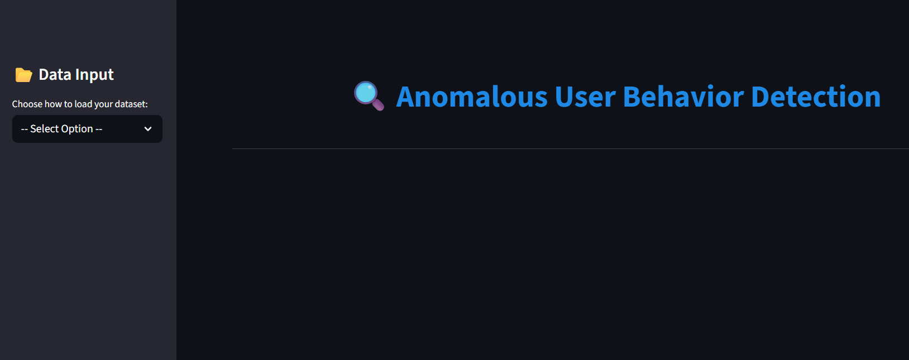
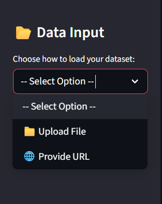
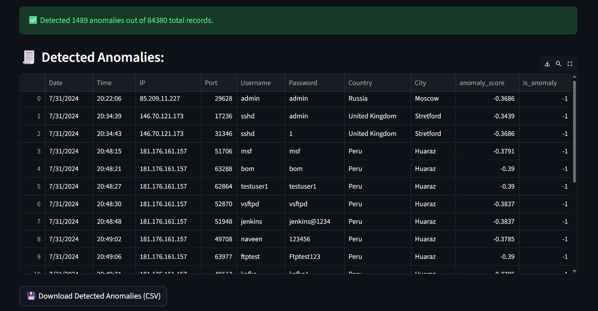

← Back to Projects
Anomaly Dectator



The Anomalous User Behavior Detection system is a machine learning–based web application designed to identify suspicious or unauthorized user activities in a dataset.
It uses the Isolation Forest algorithm to detect abnormal login patterns, irregular access times, and unusual behavior, which may indicate a compromised account or insider threat.
The system is deployed on Streamlit Cloud, allowing real-time anomaly detection through a web-based user interface.
🌤️ Features
- Data Input Flexibility
Upload dataset from your system or provide a dataset URL.
- Automated Preprocessing
Converts date/time columns automatically.
Extracts additional time-based features (hour, day, weekday).
- AI-Powered Detection
Isolation Forest algorithm identifies outliers (anomalies).
No manual labeling required (unsupervised learning).
🧠 Technologies Used
- Python, pandas, NumPy, Scikit-learn(Isolation Forest)
- Streamlit for UI
- Deployed on Streamlit Cloud